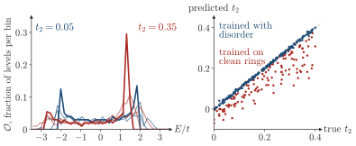
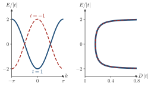

Page 8 of 9 of this session
10.7 Hamiltonian learning as the inverse of the first step of session 1
Can we run the forward arrow of Session 1 backwards, from a measured observable to the Hamiltonian that gives it? We will now see that a network trained on simulated pairs of an observable and its parameters does this, and that the training set must cover the variables that we do not want to fit. This is the part of the session that closes the loop of the course in the most explicit way.
\[\mathcal{L}(\theta) = \sum_n \left\| f_\theta(x_n) - y_n \right\|^2, \qquad \theta \;\longrightarrow\; \theta - \eta\, \nabla_\theta \mathcal{L}(\theta), \tag{10.1}\]
This is the loss and the update of a network in Section 10.2. The network gives the output \(f_\theta(x_n)\) for the input \(x_n\), \(y_n\) is the label that we want for it, \(\theta\) holds the weights and the biases, and \(\eta\) is the learning rate. In this section the input is an observable and the label is a parameter of the Hamiltonian.
Let us go back to Session 1, Section 1.4. Every quantum mechanical system is described by the Schrödinger equation. If we have a Hamiltonian and an initial state, we can integrate forward in time and obtain, in principle, every observable of the system. Examples are the density, the magnetization and the response functions of Section 9.1. This forward arrow, Hamiltonian \(\to\) observable, is what almost this entire course has been built to compute, one physical setting at a time.
However, this is not the arrow that an experimentalist can use. A real measurement never gives us the Hamiltonian. It gives an observable directly, such as a density, a conductivity, the ARPES spectrum of Section 2.12 or a neutron-scattering structure factor. The Hamiltonian is the thing that we do not have and would like to infer.
Hamiltonian learning writes this explicitly as the inverse problem. We write the Hamiltonian as \(H(\lambda_i, w_i)\), where its dependence is split into two parts. The first part are the physical parameters of interest \(\lambda\), such as magnetic or electric fields, hopping amplitudes and many-body interaction strengths. The second part is a set of hidden, or nuisance, variables \(w\) that one does not want to fit. Examples are smaller parameters, disorder realizations, artifacts of the computational method that generated the training data, and plain randomness. If we write \(\mu \equiv w\) for this vector of hidden variables, the forward direction is the map
\[\mathcal{O} = \mathcal{O}\big[H(\lambda,\mu)\big], \tag{10.11}\]
and Hamiltonian learning asks for the inverse map, \(\mathcal{O} \mapsto \lambda\), where we marginalize over \(\mu\) as well as we can instead of trying to fit it. In general this is a difficult inverse problem, since many different \(\lambda\) can be compatible with the same measured \(\mathcal{O}\), and there is little real experimental data to train on. The practical strategy is, once again, to use theory to compensate for the lack of experimental data. We simulate the observable \(\mathcal{O}\) from many different and known Hamiltonians \(H(\lambda_n)\) that cover the range of parameters of physical interest. These are the same forward calculations, such as the density, the magnetization and the spectroscopy, that we learned to compute directly in the earlier sessions. Then we train a neural network \(\mathcal{N}_\theta\) on this synthetic data to invert (10.11), and we do this by minimizing a squared loss.
The network \(\mathcal{N}_\theta\) that inverts (10.11) is trained by minimizing
\[\mathcal{L}(\theta) = \sum_n \left\| \mathcal{N}_\theta\big(\mathcal{O}[H(\lambda_n)]\big) - \lambda_n \right\|^2. \tag{10.12}\]
The pairs of an observable and its \(\lambda_n\) are simulated, so every pair has its answer. The trained network is then applied to a measured observable, and the hidden variables \(\mu\) must be covered by the training set.
The steps Why the squared loss gives the average of the labels
The simplest case is one observable \(\mathcal O\) that appears twice in the training set, once with the label \(\lambda_a\) and once with \(\lambda_b\). This happens when two Hamiltonians, with different \(\lambda\) or different hidden variables \(\mu\), give the same observable. The network has one output \(y=\mathcal N_\theta(\mathcal O)\) for both pairs, so their two terms in (10.12) are \((y-\lambda_a)^2+(y-\lambda_b)^2\). The derivative with respect to \(y\) vanishes when
\[2(y-\lambda_a)+2(y-\lambda_b)=0, \qquad y=\frac{\lambda_a+\lambda_b}{2},\]
meaning that the best output is the average of the two labels. For \(\lambda_a\neq\lambda_b\) the loss is not zero there, since one output cannot match two different labels.
Then many pairs. We group the terms of (10.12) by their input. For the \(M\) pairs that share the observable \(\mathcal O\), with the labels \(\lambda_1,\dots,\lambda_M\) and their average \(\bar\lambda\), the cross term is proportional to \(\sum_m(\bar\lambda-\lambda_m)=0\), so
\[\sum_{m=1}^{M}(y-\lambda_m)^2 = M\,(y-\bar\lambda)^2 + C,\]
where \(C\) depends only on the labels and not on \(y\). A network that can take any value at each input then gives \(y=\bar\lambda\), the average of \(\lambda\) over all the \(\lambda\) and \(\mu\) of the training set that give this observable. The part \(C\) is what no network can remove, and it measures the uncertainty of the estimate. With many training pairs, inputs that are close to each other play the role of the same input.
The linear network of Schematic 10.9 cannot take any value at each input. It gives the linear function of \(\mathcal O\) that is closest to these averages in the sum of \(M\,(y-\bar\lambda)^2\) over the inputs, meaning that each average counts as many times as it has pairs. So for a network trained with disorder the target is the average \(t_2\) of the training rings, of every disorder strength, that give the measured observable. This argument says nothing about the network trained on clean rings, since the disordered test rings give observables that are not in its training set.
Once the network is trained on simulated pairs, where the answer \(\lambda_n\) is known by construction, the same network is applied to a real experimental observable \(\mathcal{O}_{\rm exp}\). A concrete example is a two-dimensional spectroscopy of a quantum magnet. Then \(\hat\lambda = \mathcal{N}_\theta(\mathcal{O}_{\rm exp})\) gives an estimate of the physical parameters of the Hamiltonian, for instance the first-, second- and third-neighbor exchange couplings of that magnet. They are extracted directly from a measurement for which there is no closed-form inversion formula at all. Figure 10.6 shows both stages, the synthetic training set and the use on real data, together with the forward arrow that the two stages invert.

This is the mirror image of the starting point of Session 1, and we want to stop for a moment on this symmetry. In nine sessions we built more and more sophisticated ways to go from a Hamiltonian to an observable. These are the mean-field decoupling of Section 1.12, Bloch’s theorem of Section 2.5, the topological invariants of Section 3.5, the Landau levels of Section 4.9 and the Nambu spinors of Section 5.8. Then come the magnon spectra of Section 6.13, the tensor-network ground states of Section 7.4, the parton constructions of Section 8.8 and the response functions of Section 9.1.
Hamiltonian learning does not leave any of these behind. Instead, it uses the same forward methods, run many times on synthetic data, as the training set to learn how to run the process in reverse. In this sense, the first method of the course and its final method are the same method, applied in opposite directions.
Let us see the two stages on the smallest example, a ring of sites where the parameter that we want is the second-neighbor hopping and the hidden variable is a random onsite energy. The toy of Schematic 10.9 shows that a network trained on clean rings misses the hopping of disordered rings, while the same network trained with disorder finds it. So the training set must cover \(\mu\), and then we do not need to know \(\mu\).

g5_ring_dos.py
A network \(\mathcal N_\theta\) takes an observable \(\mathcal O\) and gives the parameters \(\lambda\) of a Hamiltonian. It is trained with the loss
\[\mathcal{L}(\theta) = \sum_n \left\| \mathcal{N}_\theta\big(\mathcal{O}[H(\lambda_n)]\big) - \lambda_n \right\|^2.\]
Here \(\mathcal O[H(\lambda_n)]\) is the observable of the Hamiltonian with the parameters \(\lambda_n\). Why do we train on simulated observables, and not on measured ones?
Show the answers
- A. ✗ False
This is false. A mean-field simulation of a strongly correlated model can be wrong compared to the experiment. Even so, it gives the exact \(\lambda_n\) of its own input, which is what training needs.
- B. ✓ True
This is true. A measurement does not come with its \(\lambda_n\), since this is what we want to find. A simulation gives a pair \((\mathcal O,\lambda)\) for each run, so we can make \(10^5\) pairs.
- C. ✗ False
This is false. A measured dI/dV is an array of numbers, one for each value of the voltage, and it can be the input of the network. At the end it is the input of the trained network.
Many different values of \(\lambda\) give nearly the same observable \(\mathcal{O}\). What is the consequence for the inverse map?
\[\mathcal{L}(\theta) = \sum_n \left\| \mathcal{N}_\theta\big(\mathcal{O}[H(\lambda_n)]\big) - \lambda_n \right\|^2. \tag{10.12}\]
Show the answers
- A. ✗ False
This is false. For a chain with \(t>0\) the bandwidth is \(4t\), so \(\mathcal O\) fixes \(t\) and the inverse map exists. It is not defined only where the observable is not enough.
- B. ✓ True
This is true. A chain with \(t\) and a chain with \(-t\) have the same density of states, so the network cannot give the sign and gives an estimate with an uncertainty. This estimate is the average of the labels of the training pairs with the same observable, so the training set must cover the hidden variables \(\mu\).

The bands of the chains with \(t=1\) and \(t=-1\) are upside down with respect to each other, and the density of states per site, \(1/(\pi\sqrt{4t^2-E^2})\), is the same. Both are computed with pyqula, with the energies in units of \(|t|\). - C. ✗ False
This is false. The pairs \((\mathcal O,t)\) and \((\mathcal O,-t)\) have the same input and different labels. The squared loss is minimal when the network gives the mean of the two labels, which is \(0\), and then the loss is \(2t^2\), which is \(t^2\) per pair, and not zero.
A linear network reads the hopping \(t_2\) from the density of states of a ring. The rings have random onsite energies, and the network does not know them. Each plot shows the predicted \(t_2\) against the true one for 200 test rings. Which network was trained on rings with disorder?
Show the answers
- A. ✗ False
This is false. This network was trained on clean rings, and the disordered test rings give observables that it never saw. The clean rings leave some energy bins of the density of states empty, so the fit has many solutions, and we take the one of smallest norm. Then most points fall below the diagonal, and over ten random draws of the rings the prediction is too small by \(0.03\) to \(0.05\) on average.
- B. ✓ True
This is true. The points sit on the diagonal, with an error of \(0.004\) to \(0.005\) over ten random draws of the rings, for the fit of smallest norm. The training rings had disorder of the same strength as the test rings.
- C. ✗ False
This is false. This network gives \(0.2\) for every ring, so it ignores its input. Over ten random draws of the rings its error is \(0.11\) to \(0.12\). This is close to the spread \(0.4/\sqrt{12}\approx0.12\) of the true \(t_2\), which are drawn from \([0,0.4]\).
The band of a chain with a first-neighbor hopping \(t\) and a second-neighbor hopping \(t_2\) is \(\epsilon_k=-2t\cos k-2t_2\cos2k\). Show that the chains with \(t\) and \(-t\) have the same density of states, while the chains with \(t_2\) and \(-t_2\) do not.
Solution
We shift the momentum by \(\pi\). Since \(\cos(k+\pi)=-\cos k\) and \(\cos(2k+2\pi)=\cos2k\),
\[\epsilon_{k+\pi}(t,t_2)=2t\cos k-2t_2\cos2k=\epsilon_k(-t,t_2).\]
The shift maps the Brillouin zone onto itself, so the chains with \(t\) and \(-t\) have the same set of energies and the same density of states \(D(E)\). For \(t_2=0\) this is the band from \(-2|t|\) to \(2|t|\), of width \(4|t|\) for both signs. What changes is the momentum of each level, which a probe that resolves the momentum, such as ARPES, can see. For \(t_2=0\), and in general for \(t_2\geq-|t|/4\), the band minimum is at \(k=0\) for \(t>0\) and at \(k=\pi\) for \(t<0\).
For the second-neighbor hopping the same identity gives
\[\epsilon_k(t,-t_2)=-2t\cos k+2t_2\cos2k=-\epsilon_{k+\pi}(t,t_2),\]
so \(t_2\to-t_2\) maps the set of energies to minus itself, and \(D(E)\) to \(D(-E)\). For \(t\neq0\) and \(t_2\neq0\) the two are different. For \(t=1\) and \(t_2=0.2\) the band goes from \(-2.4\) to \(1.6\), and for \(t_2=-0.2\) it goes from \(-1.6\) to \(2.4\).
So the density of states changes with \(t_2\) and with its sign, which is why the toy of Schematic 10.9 can learn \(t_2\). On the infinite chain, and on a ring with an even number of sites such as the \(200\) sites of the toy, the sign of \(t\) only moves each level in momentum. So no density of states, and no network trained on one, can give it.